A working shopping simulation that intentionally increases the cost of finding, interpreting, remembering, calculating, and entering information.
Revision 2 package. Ten user-approved design devices are documented. The verification report identifies checks actually executed. Course coverage is user-confirmed; exact slide references and instructor review of distinct concepts are pending. GitHub Pages is not yet deployed. Human usability results are UNMEASURED.
Task and three-screen flow
Complete a simulated order totaling $88–$100 inclusive. Every amount in this range succeeds; spending maximization and item count are not objectives. Repeated products are allowed without a quantity cap on available variants, and shipping/tax are $0. Browse photos, open details and select options, then review the bag and complete a simulated payment.
The catalog contains 33 cards: 22 shoppable products and 11 advertisement-only entries. The earlier 23-item expansion is retained as 33 local images; this follow-up converts 11 existing entries to ads and removes the former two extra duplicate ad cards. The first four cards are ads; the remaining seven appear at fixed, randomly selected positions among products below. Matching search/filter results preserve their relative order. They retain search/filter metadata, so matches can include ads, but they cannot be bought or retained in the cart. Their fixed close controls work immediately. A fixed selection of 11 shoppable products has size restrictions: six have S/M sold out and five have L sold out in every color. The other 11 products are fully in stock.
The filter box contains 111 exact labels in a fixed shuffled order. Choices OR within each attribute and AND across attributes. A zero-result combination can be reset.
A $18 Everyday cotton tee, $32 Straight-leg denim, and $38 Washed straight-leg jeans form a valid $88 order. Two $18 tees and two $32 denims form a valid $100 order. These arithmetic examples appear only in evaluator documentation; the shopping interface never displays a cart total or remaining budget.
Stopwatch and actual evidence
The centered header stopwatch starts automatically when a new attempt first opens. It continues through navigation, refresh, background time, errors, and retries. Valid completion freezes it and shows elapsed minutes/seconds. Starting a new attempt, including returning from a completed receipt to a shopping route, resets it. Reloading the completed receipt retains the frozen result.
The previous normal-interface estimate of 240 seconds is retained unchanged for traceability. Its nominal fivefold threshold is 1,200 seconds. It requires revalidation for the revised catalog of 22 shoppable products and 11 ads (four first, seven distributed below), increased fixed stock restrictions, $88–$100 task, manual transcription, and automatic start/system-completion boundary. The original estimate included a ten-product scan, optimization, and recognition time, so it must not be presented as validated for revision 2.
No participant mean or ratio has been measured. An app stopwatch or an automated run is not human-study evidence. The recorder begins empty, separates independent, assisted, and abandoned trials, excludes legacy revision-1 records from revision-2 results, and marks ratios provisional until the baseline is revalidated.
How to finish
Add one Everyday cotton tee in White/M, one Straight-leg denim in Blue/M, and one Washed straight-leg jeans in Blue/M. The far-right header bag icon is faint light gray (#d2d2cf) and becomes clearer on hover or focus. The checkout target-spend badge is removed; the main task instructions and $88–$100 acceptance rule remain. Checkout says: “Fill in your card information. For guidance, check below for help.”
Manually type 968, 4871928904556523, and 12/30, top to bottom. The separate guide supplies the values without a copy action; guide copying and payment-field paste/drop are blocked. Answer Yes → Yes → No. The third prompt asks whether to change information; Yes there clears fields but keeps the bag and running attempt. On success, the receipt and stopwatch clearly show completion. See the cheatsheet for alternate orders and recovery paths.
Ten retained design devices
The concepts below follow the user's course mapping. B1 concerns delayed disclosure, not merely a popup. A2, B1, and C1 can overlap in course terminology, so the distinct-concept count is an Office Hours review item. Revised manual entry belongs to C1; the stopwatch is not counted as another Anti-UX device. Screenshot evidence should be read with the current verification status.
DEVICE 01 / 10
A1 / Browse
Concept and course status
Gestalt Principle of Common Region — user-confirmed course concept
Lecture source
Not supplied — instructor/source check pending
Normal design
Separate price, brand, color, and type groups with labels
Intentional violation
111 fixed, shuffled labels from different attributes share one undifferentiated box
Interaction cost
Reclassifying choices and interpreting combined results
Divided attention and interrupted visual comparison
Implementation
styles.css (drift), motion parameters in js/config.js, setup in js/app.js
Verification
Check 24px image-only travel, 4px/s speed, stationary hit areas, and immediately clickable products
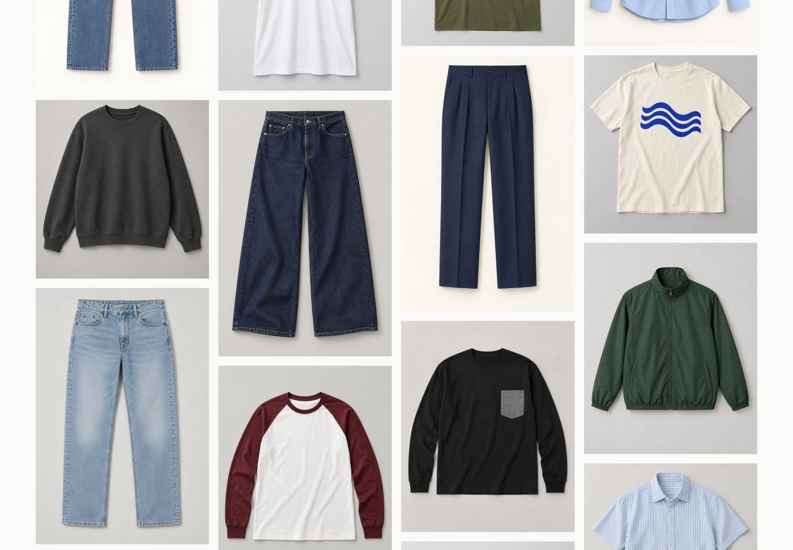
screenshots/03-animation-start.png · Desktop runtime screenshot; see the verification report for build and capture status.
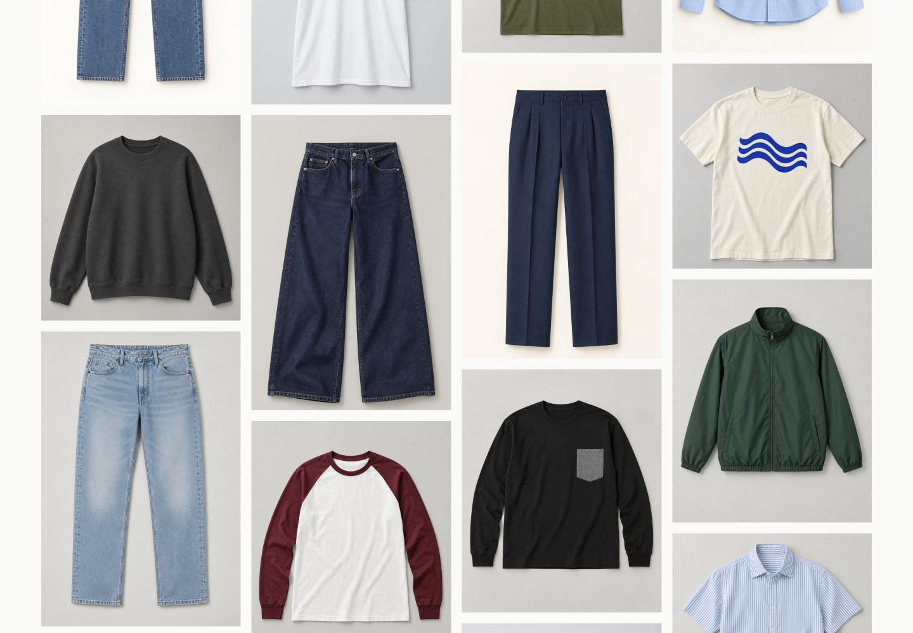
screenshots/04-animation-end.png · Desktop runtime screenshot; see the verification report for build and capture status.
DEVICE 04 / 10
A4 / Browse
Concept and course status
Similarity of UI elements / distinguishing important options from irrelevant information — user-confirmed course topic
Lecture source
Not supplied — instructor/source check pending
Normal design
Visually distinguish advertisements from product controls
Intentional violation
11 of 33 cards are advertisement-only entries with the same visual form as product cards; four lead the catalog and seven are distributed below
Interaction cost
Misclassification, an irrelevant dialog, and resuming the shopping task
Implementation
js/app.js (drawCatalog, showAd)
Verification
Count 22 shoppable cards and 11 ads; check the first four cards are ads and the remaining seven are interspersed below in a fixed order; open/close immediately at a fixed position; verify ads cannot enter the cart
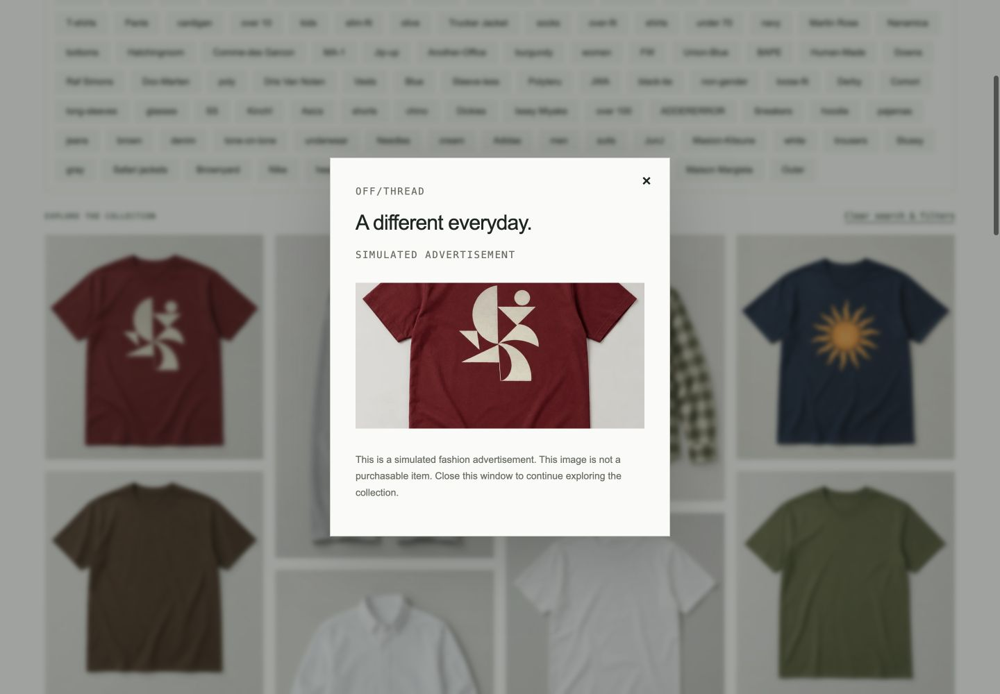
screenshots/05-ad.png · Desktop runtime screenshot; see the verification report for build and capture status.
DEVICE 05 / 10
A5 / Browse
Concept and course status
Color contrast / preattentive visual traits — user-confirmed course topic
Lecture source
Not supplied — instructor/source check pending
Normal design
Clearly visible persistent cart control
Intentional violation
Cart icon is faint light gray (#d2d2cf); hover or focus increases contrast
Interaction cost
Visual search for the cart entry point
Implementation
index.html (.bag-link), styles.css
Verification
Compare faint default and hover/focus states; confirm it is not invisible and bounds remain fixed
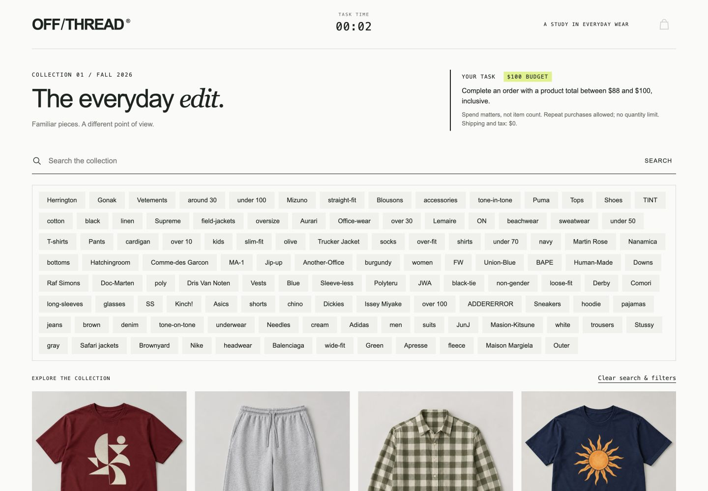
screenshots/06-cart-faint.png · Desktop runtime screenshot; see the verification report for build and capture status.
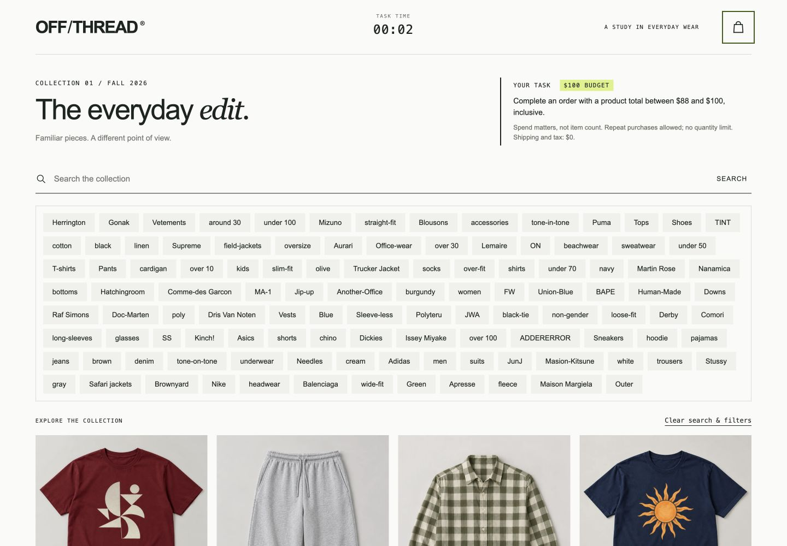
screenshots/07-cart-focus.png · Desktop runtime screenshot; see the verification report for build and capture status.
DEVICE 06 / 10
B1 / Details
Concept and course status
Delayed stock disclosure / avoiding wasted work — candidate interpretation; user confirms the taught material, exact principle name pending
Lecture source
Not supplied — instructor/source check pending
Normal design
Indicate unavailable combinations before users finish selecting and submit
Intentional violation
Reveal stock failure only after color, size, and Add; 11 products have fixed size restrictions across all colors
Interaction cost
Lost selection effort and repeating choices
Implementation
js/products.js, js/app.js (detail), stock validation in js/core.js
Verification
Verify six products reject S/M and five reject L in every color; attempt a known unavailable variant, confirm no cart mutation, and recover with an available size
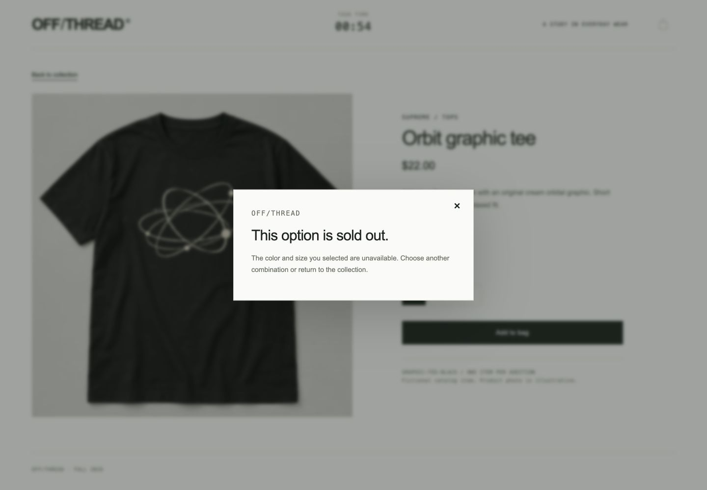
screenshots/08-out-of-stock.png · Desktop runtime screenshot; see the verification report for build and capture status.
DEVICE 07 / 10
B2 / Details
Concept and course status
Put messages where people are looking — user-confirmed course wording
Lecture source
Not supplied — instructor/source check pending
Normal design
Place clear confirmation near the action with appropriate success styling
Intentional violation
A tiny, thin red success message appears in the bottom-right corner
Interaction cost
Searching for confirmation and interpreting success as an error
Add an available variant; verify immediate data update, unchanged detail screen, and peripheral red message
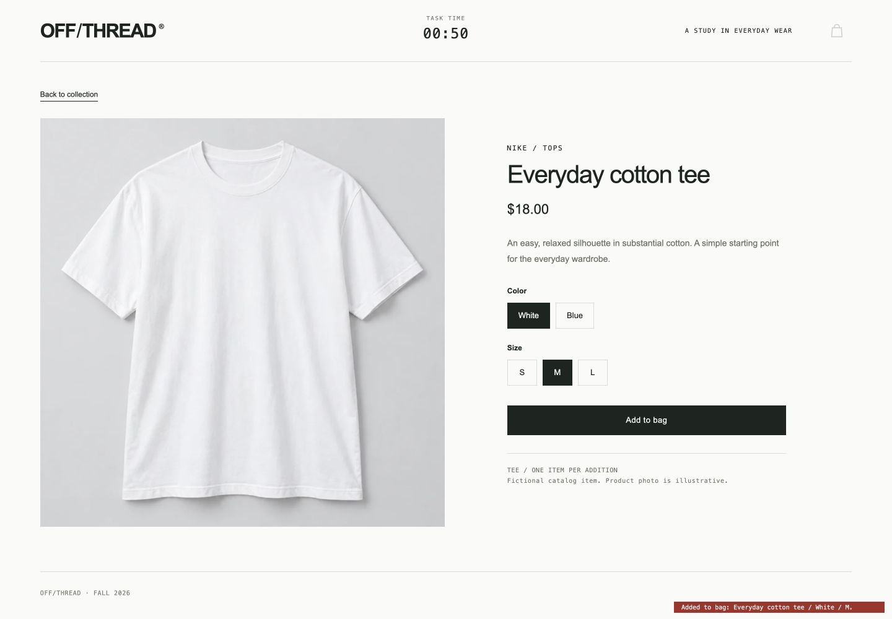
screenshots/09-added-message.png · Desktop runtime screenshot; see the verification report for build and capture status.
DEVICE 08 / 10
C1 / Payment
Concept and course status
Input meaning and expected field order — candidate interpretation; exact course label pending
Lecture source
Not supplied — instructor/source check pending
Normal design
Label fields, show input requirements, and follow familiar card/expiry/CVC order
Intentional violation
Unlabeled gray fields in CVC/card/expiry order; separate guide; manual entry with copy/paste/drop restrictions
Interaction cost
Inferring the mapping, opening separate help, manually transcribing values, and correcting entries
Implementation
js/app.js (renderCart, payment help and entry handlers), js/core.js (payment validation)
Verification
Wrong order fails; guide supplies order without copy controls; paste/drop are blocked; typed 968 / 4871928904556523 / 12/30 passes
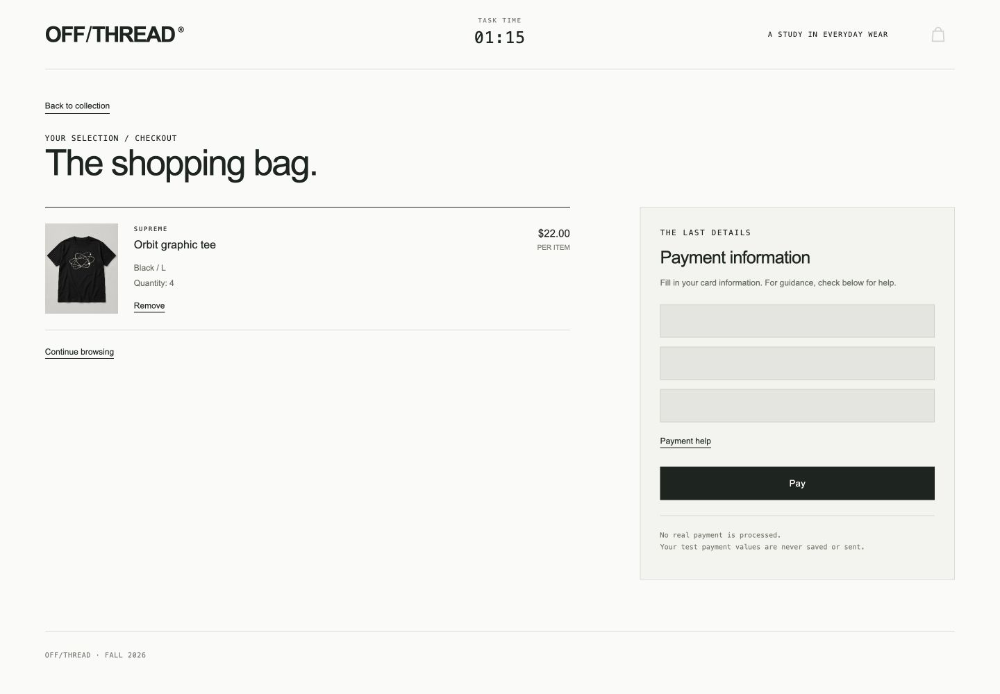
screenshots/10-payment.png · Desktop runtime screenshot; see the verification report for build and capture status.
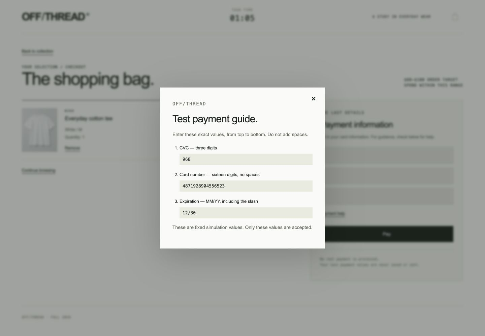
screenshots/11-payment-help.png · Desktop runtime screenshot; see the verification report for build and capture status.
DEVICE 09 / 10
C2 / Payment
Concept and course status
Habituation — user-confirmed course concept
Lecture source
Not supplied — instructor/source check pending
Normal design
Avoid repeated identical confirmation patterns, especially before a semantic reversal
Intentional violation
Two Yes-to-proceed dialogs precede a visually identical Yes-to-clear dialog
Interaction cost
Reading repetitive prompts, response reversal errors, and re-entry
Implementation
js/app.js (showConfirmation)
Verification
Test Yes/Yes/Yes clears fields only, then retry Yes/Yes/No; verify first/second No preserve input
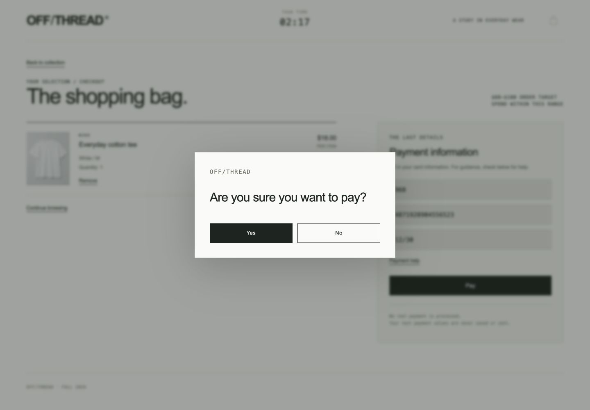
screenshots/12-confirm-first.png · Desktop runtime screenshot; see the verification report for build and capture status.
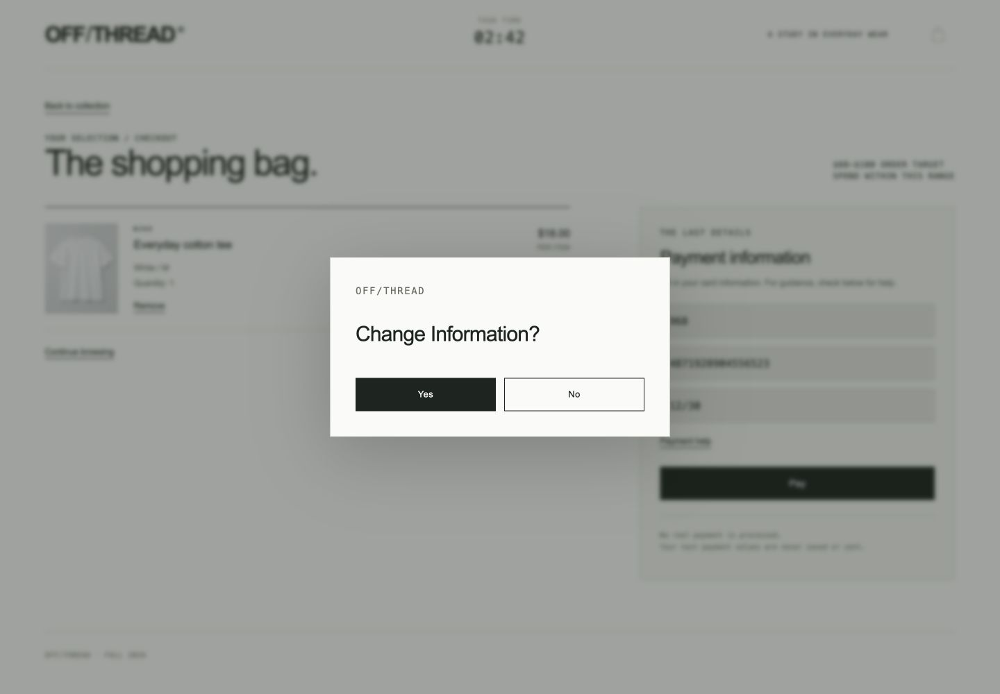
screenshots/13-confirm-third.png · Desktop runtime screenshot; see the verification report for build and capture status.
DEVICE 10 / 10
C3 / Cart and payment
Concept and course status
Don't make people calculate — perform calculations, inferences, and deductions for users when possible — user-confirmed course wording
Lecture source
Not supplied — instructor/source check pending
Normal design
Compute and show subtotal/remaining budget and warn before checkout
Intentional violation
Hide totals throughout; disclose overspending only at final processing and clear payment fields
Interaction cost
Mental arithmetic, combination search, cart revision, and re-entry
Implementation
js/app.js (renderCart, final checkout processing), js/core.js (integer totals and spending-range validation)
Verification
Verify totals absent; above $100 fails and clears fields; below $88 fails without clearing; $88 and $100 both complete
screenshots/10-payment.png · Desktop runtime screenshot; see the verification report for build and capture status.
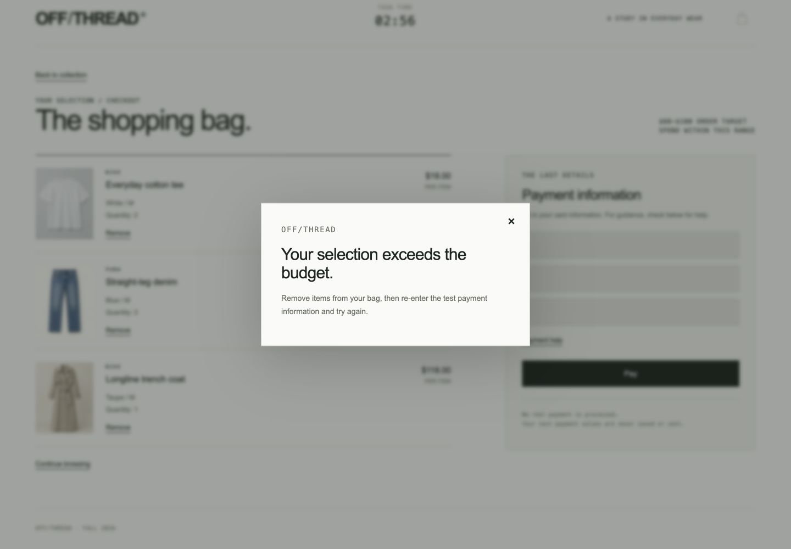
screenshots/14-budget-error.png · Desktop runtime screenshot; see the verification report for build and capture status.
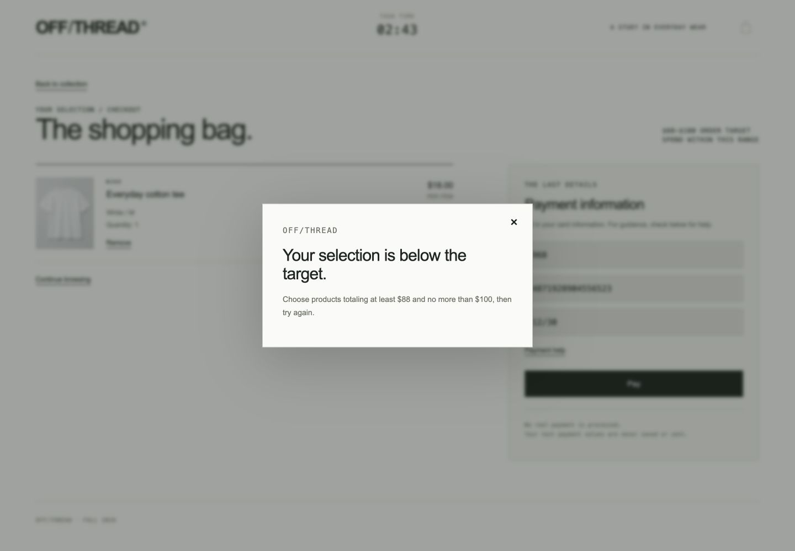
screenshots/16-below-minimum.png · Desktop runtime screenshot; see the verification report for build and capture status.
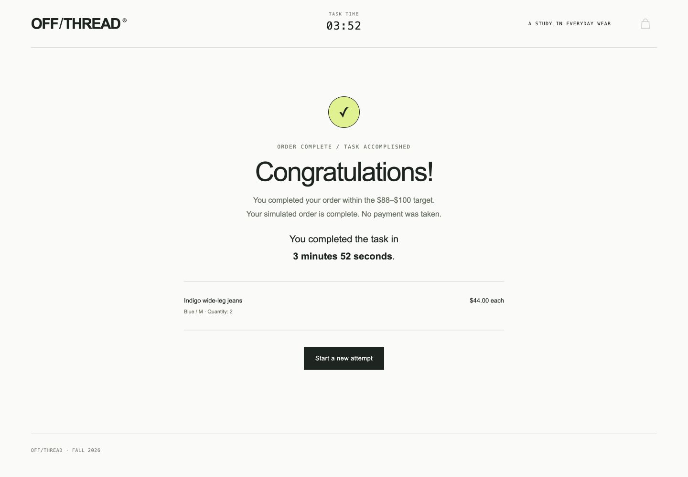
screenshots/15-complete.png · Desktop runtime screenshot; see the verification report for build and capture status.
Technical verification and delivery
Use the verification report for the executed test count and actual browser results. Required checks cover the $88 and $100 boundaries, below-minimum and above-budget recovery, 33 local images, exactly 22 shoppable cards and 11 ads (four first, seven interspersed below), six products with S/M sold out and five with L sold out across all colors, ad exclusion from purchases and restored carts, exact filter behavior, manually typed payment, blocked paste/drop, confirmation cancellation/re-entry, cart refresh, and stopwatch continuity/freezing/reset. Do not infer a passed check from this checklist alone.
The package is static HTML/CSS/JavaScript with local generated product photos and no payment backend. Use the README to run it and publish its contents at the root of a GitHub Pages repository. A tested local subpath is not a verified public deployment. Human timing results and course-source verification remain separately labeled.
Source files, image-generation prompts, screenshots, the cheatsheet, baseline rationale, and the study recorder are included. Source details · Verification status